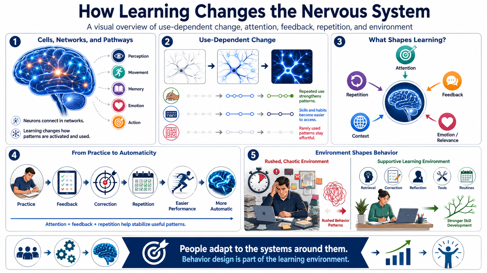

The Brain as an Adaptive System
Connecting to LMS... Progress: in progress

Narration
At a high level, the brain and nervous system are made of cells and networks that communicate through patterns of activity. Neurons connect with other neurons, and those connections participate in pathways that support perception, movement, thought, memory, emotion, and action. For this course, the practical point is that learning is not just receiving information. It involves changes in how patterns are activated and used.
Patterns can be strengthened or weakened through repeated use. A skill that is practiced often, with attention and feedback, can become easier to access. A behavior that is repeatedly triggered by the same cue can become more automatic. A strategy that is rarely used may remain effortful. This is often described as use-dependent change: the nervous system adapts partly in response to what is repeatedly used.
Attention, emotion, repetition, feedback, and context all influence learning. Attention helps select what is processed. Repetition gives the system multiple chances to stabilize a pattern. Feedback helps correct the pattern. Context provides cues that tell the learner when and how to use the skill. Emotion and relevance can influence whether an experience receives enough priority to be remembered and revisited.
The practical implication is clear: people adapt to the systems around them. Training, routines, incentives, tools, and environments all shape what gets repeated. If a workplace rewards rushed work, rushed patterns may become normal. If a learning design rewards retrieval, correction, and reflection, those patterns become easier to use. Behavior design is not separate from learning; it is part of the learning environment.